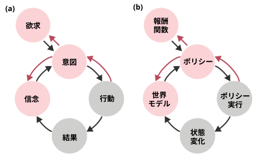

(a) 人々の世界についての信念は、彼らの欲求と組み合わさって、彼らが何を意図するかを決定します。人々の意図は彼らの行動を導き、それが世界についての信念を変える結果をもたらします。ピンクの矢印は精神状態の推論を表しています。
(b) モデルベースの強化学習の中核構成要素。報酬関数と組み合わされた世界モデルは、効用最大化を介してポリシーを生成します。ポリシーを実行すると状態が変化し、エージェントは世界モデルを修正します。ピンクの矢印は逆強化学習を表しています。
・・・
友達とコーヒーを飲みに行ったはずが、一人で座っているのを想像してみてください。友達は気が散りやすいので、途中で何かに気を取られたのではないかと疑い始めます。あるいは、時間を忘れたか、日付をすっかり間違えたのかもしれません。これは彼女らしい行動だと考えていると、ふと、そのコーヒーショップの2号店が友達のオフィスのすぐ隣にあることを思い出します。話しかけることなく、彼女はおそらく別の店のことを考えていたのだろう、（あなたと同じように）コーヒーショップが2号店であることを忘れていたのだろう、そして、もしかしたら彼女はそこに座って、なぜあなたが来なかったのか不思議に思っているかもしれない、と気づきます。
何がうまくいかなかったのかを理解するためには、友達の心のメンタルモデル、つまり彼女が何を好むのか、何を知っているのか、そして何を想定しているのかを理解する必要があった。心の理論 (ToM: Theory of Mind) と呼ばれるこの能力は、私たちがよく知っている人がさまざまな状況でどのように行動するかを直感的に理解することを可能にする。しかし、それ以上に、見知らぬ人の行動に基づいて、彼らが何を考え、何を望んでいるのかを推測することもできる。認知科学の研究によると、私たちは他の人を効用最大化者、つまり発生するコストを最小化しながら得られる報酬を最大化するように常に行動していると考えることで、精神状態を推測しているようだ。この仮定を用いることで、子供でも他人の好み、知識、道徳的立場を推測することができる。
計算論的には、他者の心がどのように機能するかについての私たちの直感は、AIの古典的な分野で開発されたフレームワークであるモデルベース強化学習 (RL：Reinforcement Learning) を使用して形式化できます。RL の問題は、世界モデルと報酬関数を組み合わせて、エージェントの報酬を最大化しながらコストを最小化するポリシーと呼ばれる一連のアクションを生成する方法に焦点を当てています。したがって、RLプランニングの原則は、他の人の行動について行う仮定に似ています。この類似性を利用して、他の人の心のメンタルモデルを、強化学習モデルとほぼ同等として形式化できます（図1）。このアプローチでは、観測可能な行動からの精神状態の推論は逆強化学習（IRL：Inverse RL）と同等です。つまり、いくつかの観測された行動が与えられたときに、エージェントの観測不可能な世界と報酬関数のモデルを推論します。
・・・